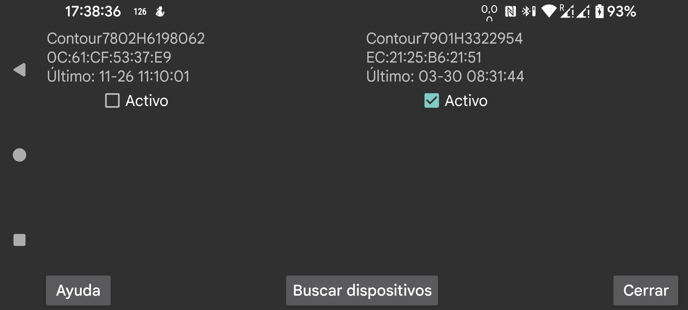

Juggluco puede recibir por Bluetooth mediciones de glucosa capilar de algunos glucómetros.
Si tienes un Contour Next ONE, puedes añadirlo a Juggluco escaneando la matriz de datos del glucómetro con el menú izquierdo → Foto.
Para otros medidores, pulsa Buscar dispositivos y toca el dispositivo cuando aparezca.
Se abrirá una pantalla en la que debes seleccionar la etiqueta de glucosa en sangre e indicar desde qué fecha y hora quieres recibir las mediciones.
La primera vez debes poner el glucómetro en modo de emparejamiento, por ejemplo manteniendo pulsado el botón del medidor apagado hasta que parpadee una luz azul.
Aquí Juggluco muestra los glucómetros que ya se están usando con la app.
Para cada glucómetro se muestran el nombre del dispositivo y su dirección. También puedes verlos en Dispositivos conectados en los ajustes de Android.
Último: hora del último valor de glucosa recibido de ese glucómetro.
Conectado / Desconectado: última vez que se conectó o desconectó.
Sin datos nuevos: hubo un intercambio correcto con el glucómetro, pero no había datos nuevos.
Datos nuevos: en ese momento se recibieron datos nuevos.
Activo: si desmarcas Activo, Juggluco dejará de conectarse a ese glucómetro.